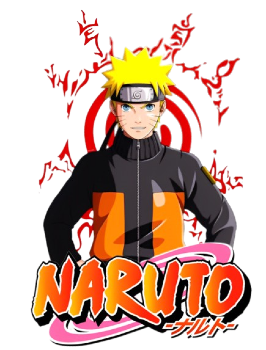
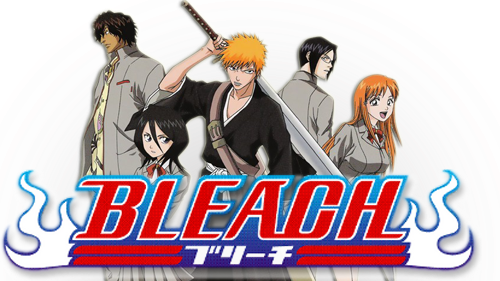
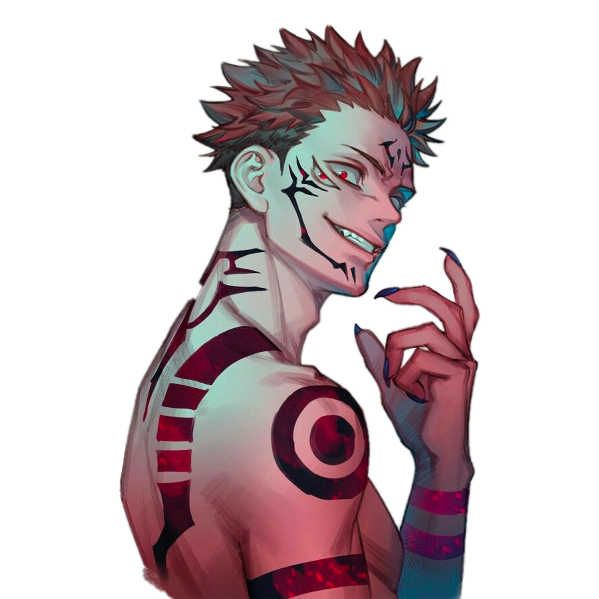

Naruto
Naruto (ナルト) é uma série de mangá escrita e ilustrada por Masashi Kishimoto, que conta a história de Naruto Uzumaki, um jovem ninja que constantemente procura por reconhecimento e sonha em se tornar Hokage, o ninja líder de sua vila. A história é dividida em duas partes, a primeira parte se passa nos anos da pré-adolescência de Naruto, e a segunda parte se passa em sua adolescência. A série é baseada em dois mangás one-shots de Kishimoto: Karakuri (1995), e que por causa dele Kishimoto ganhou uma menção honrosa no prêmio Hop Step da Shueisha no ano seguinte, e Naruto (1997). A editora Panini Comics licenciou e publicou o mangá em três versões no Brasil, e em Portugal é a editora Devir Manga quem licencia e publica o mangá. A história de Naruto continua com o seu filho, Boruto Uzumaki em Boruto: Naruto Next Generations.
Bleach
Bleach, em inglês (ブリーチ, Burīchi, em japonês; li. lixívia)[2] é uma série de mangá escrita e ilustrada pelo mangaká japonês Tite Kubo (久保 帯人), que segue as aventuras de Ichigo Kurosaki que após ganhar os poderes de um Ceifeiro de Almas (shinigami), através da ceifeira Rukia Kuchiki, sendo então forçado a guiar as almas boas ao mundo pós-vida Soul Society, e a também derrotar os Hollows (monstros espirituais malignos) que tentam devorá-las.
Jujutsu Kaisen
Jujutsu Kaisen é uma jornada épica que começa com Yuji Itadori, um estudante colegial comum que tem sua vida transformada após um encontro fatídico com o sobrenatural. Quando Yuji acidentalmente liberta uma terrível maldição contida em um artefato amaldiçoado, ele se vê imerso em um mundo de trevas e perigo.Determinado a proteger aqueles que ama, Yuji acaba ingerindo um artefato amaldiçoado que era parte do corpo de Sukuna, a mais forte maldição que já existiu, o que acaba lhe transformando num usuário de jujutsu, uma forma de combate espiritual que usa energia amaldiçoada para enfrentar maldições e entidades malignas. Com a orientação do enigmático professor Satoru Gojo, Yuji se junta a outros usuários de jujutsu, incluindo Megumi Fushiguro e Nobara Kugisaki, em uma missão para salvar a humanidade do caos iminente.